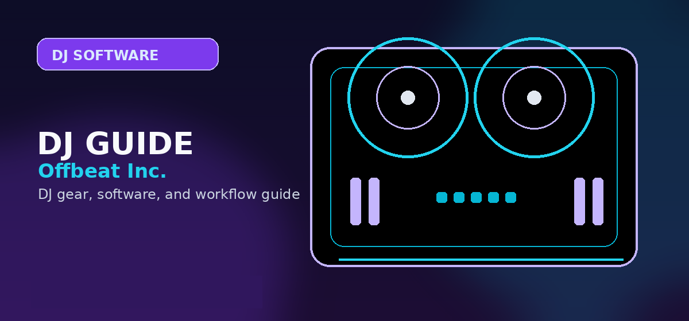

Serato DJ Pro: Is the Upgrade Worth It?
Know what Pro actually adds, whether your controller already unlocks it, and which recording and DVS features need extra hardware or licensing.

Disclosure: This guide contains product references and may contain affiliate links. We may receive a commission at no extra cost to you. Full disclosure.
Short answer: Serato DJ Pro can be worthwhile when you need advanced performance tools, direct set recording with compatible hardware, or a supported Pro hardware workflow. It is not automatically necessary for beginners or for playing paid events. Serato DJ Lite already provides mixing, hot cues, and Stems, so check your actual limits before paying for Pro.
Most important: your hardware and license affect what works. A Pro-unlocked mixer/controller may activate the software without a separate license purchase; a Lite-unlocked controller generally requires a paid Pro upgrade. DVS has its own requirements. The authoritative starting point is Serato's hardware/licensing guide.
What you get in Serato DJ Pro
- Performance and library controls: supported cue, loop, beat-jump, quantize and library-management tools for preparing and performing DJ sets.
- Stems and FX: isolate vocals, drums, melody and bass and use Pro's additional effects features. Stems is not Pro-exclusive—it is also available in free Serato DJ Lite.
- More deck options: Serato advertises four-deck capability, but simultaneous deck control and output configurations depend on compatible hardware.
- Supported music streaming: certain subscription integrations are available, but regional, account, catalog, connectivity and recording restrictions apply.
- Hardware-specific integrations: check the exact controller or mixer model rather than inferring Pro support from its brand.
Do not rely on generic claims of a new AI song-recommendation engine, seamless cloud library sync, or guaranteed zero-glitch performance: those claims have not been substantiated for this review by Serato's official feature descriptions.
Recording: when it works—and when it does not
Serato DJ Pro offers built-in set recording with eligible licensing and compatible recording-capable hardware. According to Serato's official recording guidance, direct recording is not available while using streaming-service tracks, in hardware-free Practice Mode, or on hardware without a recording function. Having a Pro license alone does not override these restrictions.
For supported recording, use appropriately licensed local music files, confirm your hardware exposes the recording path, and make a short test recording before an important set. For other setups, the DJ mix recording guide explains external capture options; external hardware may be needed.
Licensing and costs: check before buying
| Starting setup | How to evaluate Pro |
|---|---|
| Serato DJ Lite hardware-unlocked controller | Lite works without a separate Pro license. Pro generally needs a purchased license/subscription or another qualifying unlock. |
| Serato DJ Pro hardware-unlocked controller/mixer | Pro unlocks on connection to supported hardware. Confirm that exact model's supported software and features. |
| Paid-upgrade / Club Kit mixer | Special paid licensing can apply. Serato specifies Suite for its Club Kit class; inspect the exact hardware listing. |
| DVS / control vinyl | Requires compatible DVS-capable hardware and licensing, with turntables/media players plus appropriate control media; standard Pro access alone may not supply DVS. |
For actual subscription or one-time purchase options, use Serato's current pricing page. Price amounts and expansion entitlements change; this page intentionally does not advertise unsupported fixed prices, exclusive affiliate discounts, or free bundles.
Who should—and should not—upgrade?
Consider Pro: if your supported hardware and local-track workflow need its recording capability, you regularly use advanced deck/cue/FX tools absent from Lite, or your chosen DVS setup meets the separate licensing requirements.
Stay with Lite for now: if you are learning on a Lite-unlocked controller, making transitions, practicing with Stems, and do not yet need Pro-specific controls. An upgrade may not fix inadequate speaker outputs, slow hardware, or streaming restrictions.
Compare competitors: rekordbox, Traktor, djay and VirtualDJ have different supported controllers, purchase models, library and streaming workflows. No universal latency or reliability winner is demonstrated here. Check official compatibility for your actual equipment before moving an established library.
Bottom line: identify the specific limitation Pro would solve; check hardware unlocks, recording eligibility and current terms, then decide. There is no verified exclusive offer associated with this guide.
Frequently asked questions
Does Serato DJ Pro record DJ sets?
Yes, with compatible recording-capable hardware and eligible license or hardware unlock when using supported local music files. Serato does not allow its direct recorder with streaming tracks or hardware-free Practice Mode.
Does Serato DJ Lite already include Stems?
Yes. Serato DJ Lite provides Stems at no additional charge. Pro provides additional performance and effects tools, but Stems itself is not exclusive to Pro.
Does every Serato controller unlock DJ Pro?
No. Some unlock Lite and need a separate paid upgrade for Pro; others are Pro hardware-unlocked. Verify your exact product on Serato's compatible hardware list.
Is DVS included with a Serato DJ Pro license?
Not necessarily. DVS use depends on compatible hardware plus the appropriate DVS-unlocked device or license such as Suite for supported configurations. Physical decks/control media are separate requirements.